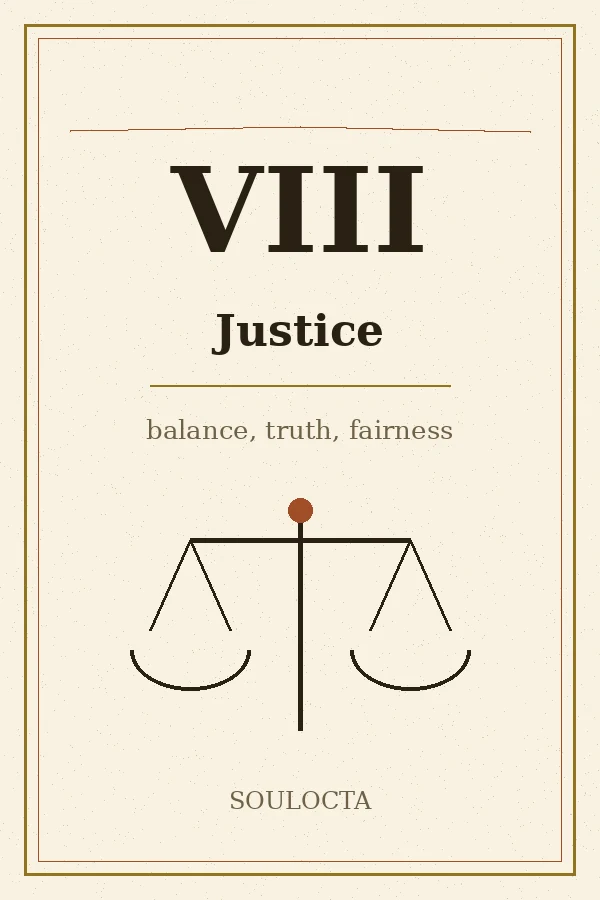

The Destiny Matrix · Free · No sign-up
Destiny Matrix Calculator
Your birth date knows you.
Find the number that explains why you keep doing the same thing.
Free, in ten seconds — every step shown so you can check it yourself.
- 100% Free
- Instant Calculation
- Private (Runs Locally in Your Browser)
01 · Enter your birth date

Your centre will appear here — enter your date below.
Example — 14 June 1995 · not your chart
A day · B month · C year · D centre (bottom) · E centre (heart) · F heritage · G talents · H material corner · I spiritual task — tap any number.
Example — 14 June 1995
Your chart
Centre 8 · Day 14 · Month 6 · Year 6 — 14 June 1995 (example).
D — 8 · Justice
Your centre value, shown at the bottom point: the lesson that ties the chart together.
You weigh things honestly — you want a fair outcome, even when it is uncomfortable.
03 · Nine positions
Your nine positions
Read the centre first, then the day and month. Try the compatibility calculator next.
The maths — a margin note
How the numbers were calculated
One rule: any number over 22 is reduced by adding its digits until it is 22 or less.
Show the maths
B = month 6 → 6.
C = year 1995: digit sum 24 → 6.
Centre D = 14 + 6 + 6 = 26 → 8.
F = 14 + 6 = 20 → 20. G = 6 + 6 = 12 → 12.
H = 6 + 8 = 14 → 14. I = 8 + 14 = 22 → 22.
The nine positions, in plain words
What each number in your chart means
Your chart has nine numbers, and each one is a different part of the picture. The day, A, describes how you act, especially in the first minutes of a meeting, when people are forming their first impression of you. The month, B, describes how you feel, and how you react when you are relaxed or under pressure. The year, C, describes where you are going, the direction your life keeps pulling towards, even when you have not said it out loud. The centre, D, is the theme that ties the chart together, the lesson that keeps coming back in different forms. The four corners fill in the rest: heritage, F, is what you bring with you from your family and upbringing; talents, G, is what comes naturally to you, the skill people ask you for without thinking; the material corner, H, is how work and money behave in your life; and the spiritual task, I, is the quieter work of a lifetime, the thing you are learning slowly, often without noticing.
The upper half of the chart is the portrait zone, the part of you the world actually meets, and it is the first thing to read after the centre. The lower half is the karmic tail, the pattern you repeat, and it is the part worth reading twice, because it names the habit you already feel. The diagonal through year, talents and material corner is the money line, and it is the most practical reading on the site, because it deals with work, and work is where most of us spend most of our days. Two charts together make a third chart, and the Destiny Matrix compatibility calculator shows it: add the two arcana at each position, and read the combined centre as the theme of the relationship. Some readers search for this whole system as the matrix destiny chart, which is the same method with the words in the other order, and this site uses both names so that a searcher finds the same honest calculator either way.
If you are new, read the destiny matrix for beginners guide, which walks through a first chart in ten minutes, and then read how to calculate the Destiny Matrix by hand, so you can check any number on this site with a pencil. If you want to compare this system with others, destiny matrix vs numerology and destiny matrix vs tarot explain the differences plainly, with the same honesty about what is not proven. The destiny matrix FAQ answers every question people actually ask, including why different calculators disagree. And if you want the year ahead, your 2027 personal year is a separate, one-number calculation from the same birth date, and it changes every 1 January, while your main chart never changes.
One more honest note, before you go further: the Destiny Matrix is not science, and no study has tested whether its numbers predict personality, relationships or money. The calculation is exact and checkable, and the meanings are symbolic. Treat the chart as a mirror, not a map. It is useful when it gives you words for something you already felt, and it is useless the moment it is treated as a fact. If a centre description fits, use it. If it does not fit, check your date first, and then trust your own judgement over the chart. A chart you can argue with is worth more than a chart you are told to obey.
Frequently asked questions
Is the Destiny Matrix calculator really free?
Yes — the full chart is free, with no sign-up. Nothing here is locked behind a paywall.
Do I need my birth time or birthplace?
No — only your date of birth is needed. Day, month and year are enough; no birth time or place is ever asked for.
What does the centre number mean?
It comes from adding your day, month and year numbers. For 14 June 1995 that is 14 + 6 + 6 = 26, which reduces to 8, Justice.
Is the Destiny Matrix accurate or scientific?
No — it is not scientific, and no study has tested it. Treat it as entertainment and self-reflection, like tarot or numerology.
Can I share my chart with someone?
Yes — press Copy your chart link and send it to anyone. The link carries only the birth date, for example ?dob=1995-06-14.
Why do different calculators give different numbers?
Schools differ on two small details. This site keeps 22 as 22, never reduces with modulo 9, and states its centre rule openly.